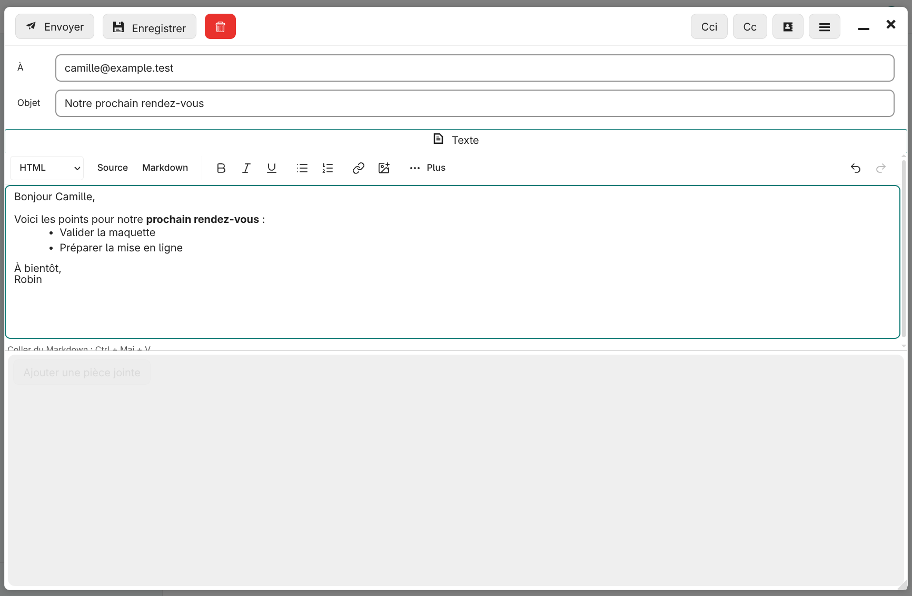
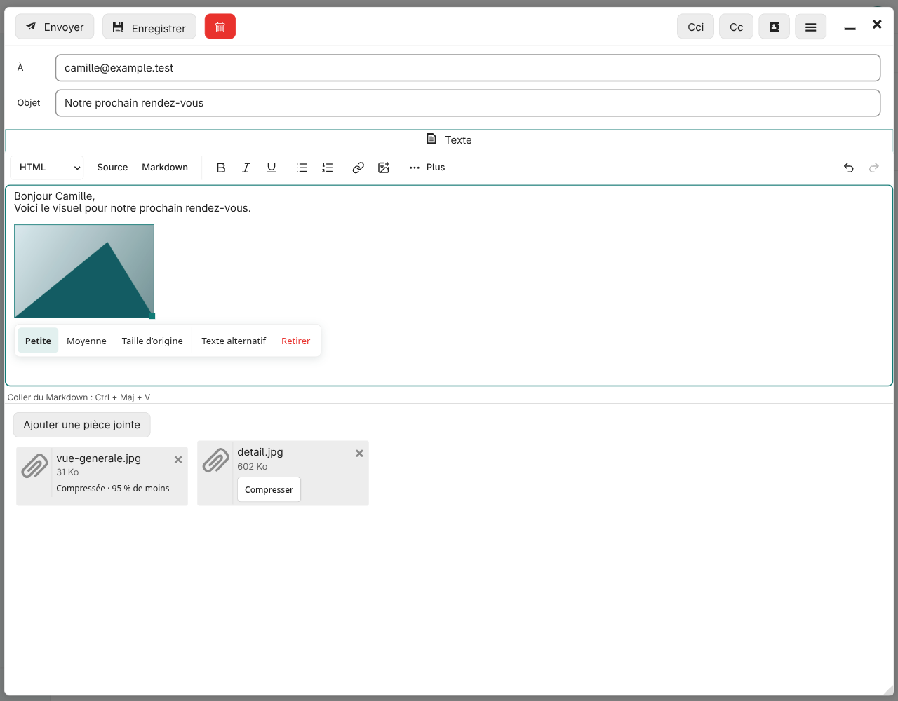
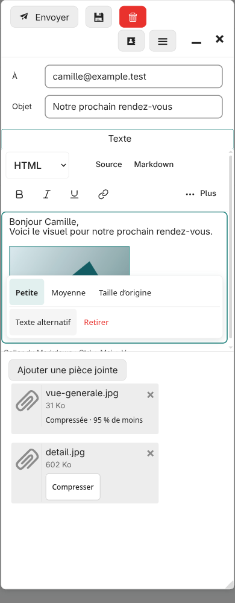
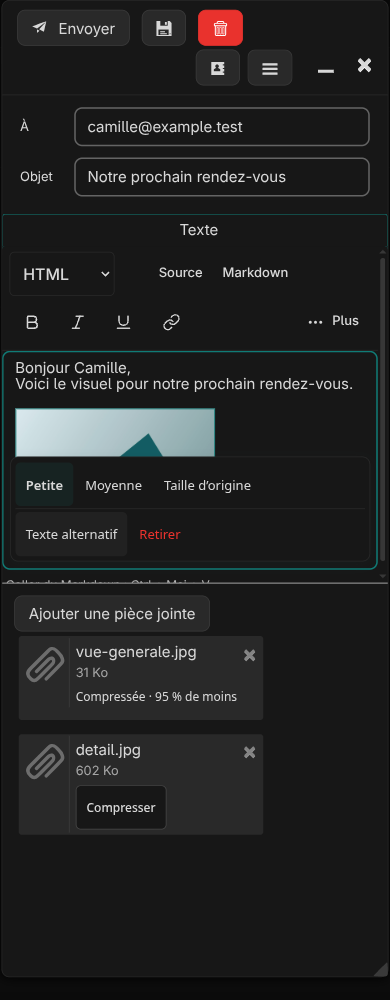

Images Nextcloud et sauvegarde durable des améliorations
Pied Web UX 1.6.6 installée le 12 septembre 2026. Les 30 fichiers du paquet correspondent au dépôt ; compilation réelle JS/CSS réussie.
Évolution de cette intervention
Diagnostic : la 1.6.5 était bien installée. La compression des PJ dépendait du fichier gardé par le navigateur après un ajout local ; les imports Nextcloud et les brouillons ne l’avaient pas.
Raccordement : le bouton Image ouvre le sélecteur natif Nextcloud. Le téléchargement authentifié est suivi de la compression puis de l’insertion dans le corps du mail. Le collage d’une image HTML intégrée passe aussi par la compression.
Pièces jointes : Compresser récupère si nécessaire l’image temporaire du compte courant, puis remplace la PJ seulement après un upload réussi. Le bouton a un fond et une bordure distincts de sa carte.
Mémoire : le dépôt local contient les décisions, les contrats d’API natifs, les sources, les tests, les empreintes des versions et les instructions de restauration.
Livraison : sauvegarde externe de la 1.6.5, contrôle des empreintes avant écriture, chargement des assets puis du numéro de version, compilation et audit des fichiers installés.
Capture de l’éditeur avant modification

Utilisation
Image → fichiers Nextcloud → Joindre : image compressée dans le texte.
Ctrl/Cmd+V : collage d’image avec compression automatique.
Glisser-déposer / Ajouter une pièce jointe : PJ normale, puis bouton Compresser en un clic.
Clic sur l’image : taille d’affichage, texte alternatif, retrait et poignée de redimensionnement.
JPEG, PNG et WebP : 1980 px maximum, cible de 1,8 Mo, original conservé si aucun gain. GIF et animations conservés. Limite de récupération Nextcloud / PJ déjà importée : 20 Mio. Les originaux dans Nextcloud restent intacts.

Éditeur natif avec contenu fictif — ordinateur.

390 px, sans débordement horizontal.

Mode sombre, actions tactiles de 44 px.
Vérification et restauration
98 scénarios navigateur, 10 vérifications du stockage des images, 25 tests de sélection filtrée et 5 diagnostics d’installation. Syntaxe et génération du thème vérifiées. Le navigateur utilise les composants natifs avec des fichiers fictifs, un transport et un cycle de popup simulés ; aucune session mail réelle authentifiée et aucun envoi ou suppression réels. La compilation et les fichiers du serveur sont vérifiés via SSH.
Dépôt local : ~/localhost/nextsnapmail-pied-web. Version GitHub 1.6.6. Mémoire : AGENTS.md, docs/CONTEXT.md, docs/MAINTENANCE.md et docs/deployments/1.6.6.md.
Sauvegarde serveur de la version précédente : ~/nextsnapmail-backups/pied-web-ux-v1.6.6-20260912T180030Z/rollback.py. Un update peut casser une API interne : la restauration est documentée, pas automatique.